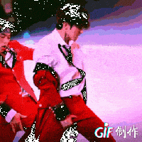

|
用语解释
本页是一个专有名词的恶俗概念解释页面。 |
摸牛舞是舞蹈动作顶胯的一种错误表演形式，与标准的顶胯不同，摸牛舞的动作更像是用手捏着牛子上下左右摆动，极其草生，恶俗不堪。
| 摸牛舞 | |
|---|---|
 阳♂物运动(re并感) | |
|
释义 |
顶胯的错误表现形式 |
|
场合 |
舞台 |
|
评分 |
ƒ(x)→0 |
一般认为，摸牛舞是由迈克尔·约瑟夫·杰克逊首创并发扬光大的。
动作要领
| 大脑降级警告
以下内容过于奇妙深刻，可能会导致大脑降级，请谨慎选择观看。 |
- Step1:两腿分开约50cm，像蹲马步一样，但不要蹲下去。
- Step2:握住牛子，最好用右手。
- Step3:↑↓↑↓←→←→，开始摇滚吧!
林佳奇表演摸牛舞
捂裆山
当年迈克尔杰克逊人气最旺的时候，曾想来中国大陆开演唱会，结果最后申请却被中国主办方驳回，驳回原因便是主办方认为杰克逊的舞蹈不文明，尤其是“摸牛”的动作，恶俗不堪，觉得弊大于利，会对中国青少年造成不良影响。